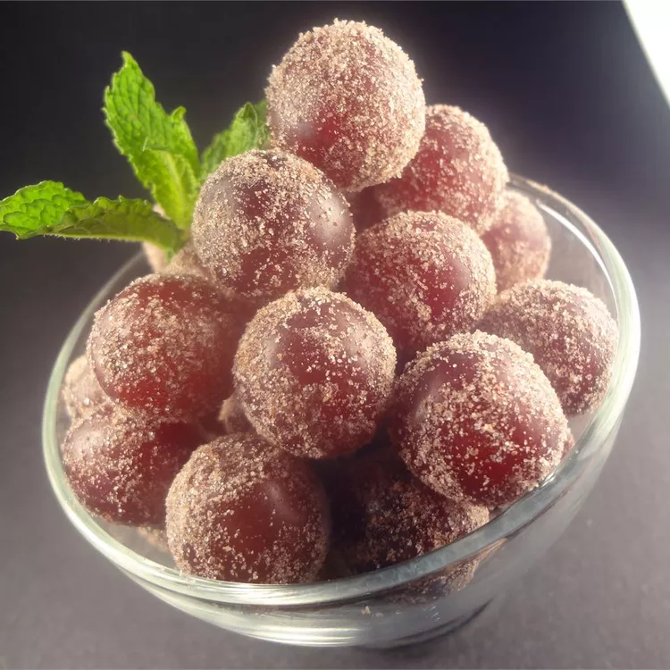

Frosted Grapes

Description
These are so wonderful. Made with flavored gelatin mix, these grapes make a simple yet elegant treat. Serve in a pretty glass bowl at a party. Instant hit.
Ingredients
- 2 pounds red seedless grapes
- 1 (3 ounce) package cherry flavored Jell-O® mix
Steps
- Pluck grapes from their stems and rinse in a colander.
- Pour the gelatin mix onto a plate.
- Place grapes on the plate one handful at a time and roll around until coated.
- Transfer to a pretty dish and refrigerate for 1 hour to allow the gelatin to set.